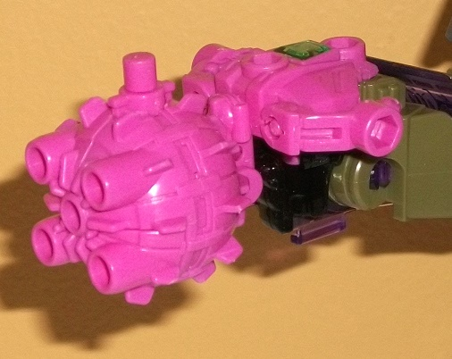

Size : Mini-Con
Difficulty of Transformation : Very Easy
Color Scheme : Black and some silver, transparent dark purple, and red
Individual Rating : 5.5
Allegiances
: Decepticon
 Boombox
Boombox
Size
: Mini-Con
Difficulty of Transformation
: Very
Easy
Color Scheme
: Black and some silver,
transparent dark purple, and red
Individual Rating
: 5.5
Boombox is a redeco of
a toy (Gora) from the Japanese version of Prime, Arms Micron-- this mold
was not released in America until now, so for the purposes of this review,
this is a new mold. In weapon mode. Boombox is a fusion cannon, complete
with flip-out blades on the top that can rotate forward, just like
Prime
Megatron's weapon
-- indeed, this was the guy he was usually paired
with, so pairing him up with another Megatron for this boxset makes sense.
There's a standard peg for plugging Boombox in somewhere on the underside
of this mode, near the rear, as well as two shorter pegs on the rear sides
of this mode. Additionally there's a fair number of standard-sized ports,
such as two on the sides of the mouth of the cannon, two on the sides of
the back of the cannon, and one on the top, near the rear-- thus, like
most Arms Microns, Boombox can fit onto a variety of places on most compatible
Transformers. Boombox's primary color is black, but unlike many of Fun
Pub's Arms Micron redecos, he has some paint-- namely some silver on the
top of the barrel and a bit along the sides of the midsection, which helps
keep Boombox a little more varied in terms of color, even if his mold detailing
is pretty simplistic so there's not a lot to "highlight", here. Because
of the name and him being mostly black and silver, I THINK Boombox is a
"light" homage to popular fan site
TFW2005's
mascot of the same name and general color scheme, even if that's pretty
much all they have in common. A small crystal bit on the side of the weapon--
which, sadly, doesn't have his allegiance symbol painted on it, which is
the purpose of these little bits-- is dark purple. It fits for a Decepticon,
but it's so dark it doesn't contrast against the black very well. Worth
noting here is that, for all his positives in this mode, Boombox suffers
from some major QC issues. I'm not sure if it's the black plastic Fun Pub
used for Boombox, as this isn't a known issue with other versions of this
mold, but many of Boombox's clips that hold parts of him together can break
apart fairly easily. On mine both of the clips that attach the blades to
the cannon, as well as the clip that attaches the gorilla "legs" to the
main body (discussed below) are either broken or nearly broken. (This is
why I'm using someone else's pictures for Boombox.) This is obviously a
major downside, but I'm not certain how widespread it is. Boombox DOES
have his gorilla head piece installed upside-down, though that's easily
corrected simply by snapping it off at the clip, turning it around, and
snapping it on again. One final note-- the stickers for BotCon 2015's custom
class figure (only available if you actually attended the class) include
some nice red-and-white details for the mouth of the cannon, making it
look like it's ready to fire.
Boombox's "robot" mode
is a gorilla, mostly accomplished by folding out the sides of the weapon
and collapsing them in a bit while folding out the gorilla face from inside
the weapon mode. The weakest portion of this mode is the "legs", which
are just the interior of the gun mode behind the body of the gorilla mode,
essentially making Boombox have the upper body of a gorilla and the lower
half of a... pogo stick? Something like that. The toy's best looked at
from the front so this can be ignored. The gorilla mode is actually fairly
good for an Arms Micron otherwise, with a small robotic-looking gorilla
head sticking out of the midsection with long arms that are bulkier near
the bottom than near the top. I wish he had actual fingers molded in there,
but still, it looks pretty nice. The blades on the back end of the lower
arms are a bit distracting, but not a huge deal. The silver paint on the
bottom and middle of the arms, as well as the face-- and the red dots used
for Boombox's eyes-- help up break up all that black even better in this
mode and actually make Boombox look decently painted, so kudos to Fun Pub
for that. For articulation, Boombox can move back-and-forth at the shoulders
in this mode, up-and-down where his pogo-leg meets his body, and his head
piece can move up-and-down slightly. Of additional note is that Boombox
has three standard-sized ports available in this mode that aren't in weapon
mode; two on the inside of the lower arms, where his "fist holes" are,
and one on the bottom of his pogo-leg.
 Heavyweight
Heavyweight

Size
: Mini-Con
Difficulty of Transformations
: Very
Easy
Color Scheme
: Moderately dull pink
and some silver and transparent forest green
Individual Rating
: 2.1
Heavyweight is another
redeco of an Arms Micron toy-- in this case, B.H., and again, I've never
reviewed the mold, so this is for all intents and purposes a review of
a new mold. Heavyweight has two different weapon modes-- the first is a
ball-and-chain (see Megatron's robot mode pic), and is meant to invoke
G1 Megatron's energy flail-- this is pretty obvious by the pink coloration
of almost the entire toy. Unfortunately, like most of Fun Pub's other Arms
Micron redecos, Heavyweight is almost ENTIRELY this color, with very few
paint apps. The small clear panel on the bottom of this mode-- where his
allegiance symbol would be if he had any paint there-- is a dark forest
green, which is a nice color to kind of tie him back to his "master's"
dominant color. Still though, an entirely pink Transformer generally doesn't
look all that great to me, G1 homage or no. There's some mold detailing
on the main body of this mode, with little ridged edges coming out if it--
if you're at all familar with the design, it's obvious that Heavyweight's
mold was originally meant to mimic
Prime Bulkhead's
wrecking ball weapon, as the detailing is pretty much identical to that.
The port on a chain can connect to most standard Transformer fists (including
Megatron's, of course), so he can be swung around fairly freely. There's
a chunk of extra "stuff" on the bottom of the ball part of this mode that
is used for the other two modes, but is obvious kibble in this mode-- just
an ugly protrusion hanging off the mace. On the plus side, like most Arms
Microns, Heavyweight has plenty of standard ports-- on five different areas
on one side of the ball, as well as on four areas on the bottom of this
mode (two on the sides of what become his robot arms), so you can stick
him on a lot of different areas.
Heavyweight's other
weapon mode is a more obvious nod to Bulkhead-- there's another peg on
the underside of the "extra section" that isn't part of the ball portion
of this mode, and you swing that section out and plug it into a fist to
mimic Bulkhead's "wrecking ball fist". This is a bit more of a solid weapon
mode, even if it doesn't fit as well on Megatron as the flail mode does.
Plus, with the five ports, it kind of looks like it can fire blasts out
of the ball as well. On the negative side, the robot head (such as it is)
is more obvious in this mode, looking straight up at one end of the "fist
mount" portion of this mode.
Heavyweight's robot
mode is just plain doofy. It's basically the figure from flail mode, but
with the chain portion tucked back in and small arm and foot pieces rotated
out from the center. It's a ridiculously fat-looking robot mode, with a
huge wrecking ball sticking out the rear, essentially giving Heavyweight
four "legs" even if, from the front, he's only "meant" to have two. The
L-shaped arms also can't do anything except rotate around one quarter of
his rotund belly, so there's no real useful articulation here, though they
do have some nice "claw-hand" mold detailing on the inside of them. The
robot head is also very weird-looking, like it's just a pair of binoculars
(with the only paint on the toy-- silver-- on the eyes) with a very small
forehead. Honestly, this mode is so bad I almost wish they had just made
Heavyweight a weapon with two different modes instead of stuffing in a
"robot" as well.
 Scalpel
Scalpel
Size
: Mini-Con
Difficulty of Transformation
: Very
Easy
Color Scheme
: White and some transparent
dark purple
Individual Rating
: 4.2
Scalpel is, again, a
new mold for the purposes of this review, previously being released only
in Japan under the Arms Micron line as "Magi". Unlike the other Mini-Cons
in this set, Scalpel's weapon mode isn't based on a weapon commonly associated
with Megatron, but rather he comes with Megatron because he was associated
with the Decepticon leader in
Revenge of the
Fallen
, in the movieverse. Plus, despite his little bit of screentime
he was a pretty memorable little guy. Anyways, in weapon mode, Scalpel
is... a blade-thing. More clearly than anything else, it's his beast mode
folded up with the pincers sticking out-- I mean, everything from his head
to his feet are just THERE. Folding them up or under the thorax area doesn't
make them any less painfully obvious. He's also almost entirely white,
and paint-less, like Heavyweight. His little "spark crystal"-- which should
have his allegiance symbol painted on it, but doesn't-- is a transparent
dark purple, which contrasts against the white exceedingly well. I wish
more of the purple was used on the toy. The mold detailing, like on most
Arms Microns, is quite simple, but there's some interesting details here
and there, like a second edge to the blades, a singular "eye" in the middle
of the head, and segmented little sections on the abdomen to make it look
more insect-like. The two blade-claws can move up or down, and in their
"default" position are sort of like
X-23
claws
for the Transformer in question, since the "main" peg for a larger TF to
hold Scalpel by is underneath the rear of his abdomen. There's also another
standard peg on the back end of his abdomen, a peg on the outside edge
of each arm, and several ports-- one in between his arms/blades, on the
underside of each blade near where it meets the arm, on the front bottom
side of the body, and one underneath the front section of the main body.
Thus, like most Arms Micron Mini-Cons, he can be stuck onto a lot of different
places on compatible Transformers.
Scalpel's beast mode
transformation is REALLY darned obvious-- you just unfold his body and
legs, and you're there. This is clearly the mode that had the design priority
for Scalpel, as it looks pretty much just like a robotic mantis with oversized
arms. Given that Scalpel's front two arms were the largest, making this
mold white makes it rather obvious as Scalpel, so I'm glad he was done--
whatever issues I have with the mold, this is the Mini-Con that most deserved
to come with this Megatron, in my opinion. Because his two modes are so
similar, I don't have much to say about this mode I didn't already mention
about the weapon mode, other than the articulation; Scalpel can move back-and-forth
at the shoulders, elbows, midsection where his stomach meeds his abdomen,
and the two legs on each side can rotate in and out a bit (as one, since
both of the legs on one side are one piece). One final note is that-- like
with Boombox-- if you attended one of the customization classes at BotCon
2015, you were given a sticker sheet with some stickers that could be applied
to Scalpel to give him such much-needed detail. Boombox's stickers were
two little simple ones, but Scalpel's help break up the white a LOT-- there's
some rather nice purple circuitry details all over his abdomen, as well
as a Decepticon symbol back there, and there's two red eye stickers to
put on his face to make it more closely resemble RotF Scalpel's oversized
eyes. If you can get this sticker set for a reasonable price, I'd definitely
go for it-- it really helps make Scalpel look better than he otherwise
does.
 Megatron
Megatron
Size
: Voyager (comes in a 5-pack
with
Autobot Stepper
,
Battletrap
,
Oilmaster
,
and
Packrat
)
Difficulty of Transformation
: Medium
Color Scheme
: Gray, moderately dark
dull green, and some metallic silver, black, chrome silver, transparent
dark purple, semi-metallic brown, red, purple, and moderately light jungle
green
Individual Rating
: 8.0
Just like the other toys
in this set, Megatron is a redeco of a mold that was released only in Japan
under the Arms Micron line-- but this is no Minicon, this is a bonafide
Voyager-class toy-- a redeco of Arms Micron/Prime Breakdown, to be exact!
It's great to see this mold come to U.S. shores, even as a different character.
In vehicle mode, Megatron takes
Breakdown's
hefty 4WD offroad, semi-military vehicle mode and applies a rough translation
of
DotM Megatron's
color scheme to it.
But first, the vehicle mode itself-- obviously this was made to be Breakdown
and fit in with the Prime aesthetic, and it does so by having a tough,
angular (nearly rectangular) silouhette that generally is light on mold
detailing. But, as is usual with the Prime "look", there's a couple of
places with more intricate mold detailing, such as the wheel hubs and near
the front and back areas, with little bolts, vents, and the like all molded
in. There's also a big chrome grill with spikes on the front that was included
with the Arms Micron "Silas" version of the Breakdown mold, and which of
course homages DotM Megatron pretty well-- arguably better than any other
part of the mold. It's also a remarkably solid mode, with everything pegging
into place very well. There's only a couple of minor robot extras-- the
most obvious are the tips of the robot toes sticking out the back end.
On a much lesser note, if looked at from a direct-on side view, you can
see the knees sticking out from underneath what should be the bottom of
the vehicle. As this is an Arms Micron toy, emphasis was put on the larger
toys being able to hold a plethora of Microns/Mini-Cons, and there's plenty
of standard ports all over the mold for that-- one obvious one in front
of the right side of the windows, three on the roof, two along each side
of the mode above the tires, one on the very rear end of the roof on the
left side, one in the middle of the spare tire, three on the front grill,
one on the front sides, and two pegs on the sides of the spare tire, so
he's got a lot of mounting points for Minicons. As for the color scheme,
the front third or so-- and the entire length of the bottom half or so--
is a dull moderately dark green that definitely looks right in place on
a run-down vehicle. The green abruptly transfers to a medium gray for the
back section of the vehicle, which is rather disconcerting and happens
rather suddenly-- it's easily my biggest beef with Megatron color-wise.
I get that they're trying to homage the different coloration of DotM Megatron's
trailer from the main truck body, but it just doesn't work on this toy.
Plus, DotM Megatron was a lighter shade of brownish gray and didn't really
have any green on him, so it fails in that respect as well. That said,
I LOVE all the semi-metallic brown paint apps all over the place that emphasize
the "rust" on DotM Megatron-- it really helps bring out more of the "run-down"
part of the homage. The purple & transparent purple windows also look
nice against the gray and green, and the silver used on the front bumper
is a VERY nice metallic shade that just looks lovely. The middle section
of the grill is chrome silver, and as of yet I've heard of no flaking problems,
so that's certainly good. Unfortunately, it looks like the paint budget
was used up with all of the rust paint apps-- many of the mold details
that you think would be painted on a premium Botcon toy (such as the headlights,
taillights, and some other minor details) are bereft of paint, which unfortunately
adds to the dullness of this mode a bit more.
The mold's transformation
is pretty ingenious yet not that difficult, with a fair amount of folding
out and rotating of parts. The end result is a pretty darned beefy robot
mode-- a bit TOO beefy for Megatron in fact, particularly given how wide
the shoulders and chest are. Megatron's a buff guy, but not THIS buff.
The gorilla arms and relatively short legs don't look too hot for a figure
homaging DotM Megatron, either. That said, the spikes on the shoulders
fit him, as well as the grill on the chest. I love how well the rear of
the vehicle folds up on the upper back, as well as how the windows fold
into the lower arms and the front section of the vehicle mode slides apart
slightly to make room for the head. There is a bit more kibble in this
mode than in vehicle mode, however; there's small sections of the vehicle
mode hanging off the lower arms, as well as "shells" around the front wheels
behind the shoulders. Sections of the side-rear of the vehicle mode also
hang behind the lower legs, though at least they fold up some. Overall,
a noticeable amount of kibble, but nothing I would consider disastrous
by any means. The mold detailing on the robot parts is, again, fairly sparse,
but uses the usual Prime aesthetic of a nice mix of sharp angles and curves,
especially around the upper legs, kneecaps and feet. There's also a few
more ports only visible in this mode-- one behind each hand, as well as
two behind the head. In robot mode the color scheme is pretty much the
same as in vehicle mode, but the gray and green are broken up much better
here, with the vehicle mode gray mostly out of the picture and only really
appearing in this mode on the upper legs and the shoulders. There's also
some more "rusty" paint apps on the shoulders and the lower legs, as well
as some black on pieces besides the wheels-- namely, the feet and hands.
There's a bit more of that nice metallic silver, to boot. One additional
color added to the mix-- mostly for small connecting parts-- is a lighter
shade of jungle green, which complements the duller green quite well. Megatron's
headsculpt is well-done in terms of the sculpt itself, with the details
being crisp and the headcrest certainly homaging Movie Megatron's pretty
nicely. The silver-painted face with red eyes has a more "traditional"
face, which fits with the more traditional look of the robot mode compared
to the movieverse styling, but--
there's no battle damage
! Considering
that one of the trademarks of DotM Megatron was that about a third of his
head was missing, I feel this was a BIG mistake on FunPub's part. I realize
they explain in his bio that he got repaired, but if that's the case, why
is he still rusty and decrepit-looking? If you're homaging a character,
sometimes referencing the character's look takes a bigger priority than
fictional sense-- I feel this was a big opportunity missed. As for articulation,
Megatron's pretty good in that respect-- he can move at the head, shoulders
(at two points, three if you include the vehicle parts on the back of the
shoulders), elbows (at two points), rotation at the waist, and movement
at the hips (at two points), knees, and slightly back-and-forth at the
ankles. Thus, for such a brawny guy, he's pretty poseable.
Megatron certainly comes
with a posse this time around, doesn't he? It's rather impressive that
Fun Pub was not only able to get a new-for-the-U.S. mold for Megatron,
but for all three of his Minicons as well. That said, that's where most
of my positives about the main toy out of this bunch and the Minicons come
from-- that for many U.S. fans, they're brand new toys. That said, Boombox
has QC issues, Heavyweight looks just dumb, Scalpel has a very poor weapon
mode, and Megatron is a passable "Prime-ized" version of his DotM version,
but only just. Megatron just doesn't resemble his DotM version enough in
ways that matter (beyond the grill), and though he's a pretty solid mold,
his color scheme is largely boring (minus the rust spots) and a little
odd-looking in vehicle mode. His headsculpt was definitely a missed opportunity,
as well. I also really wish his Mini-Cons had more paint. If you're a big
movieverse fan, this may be a mildly recommended purchase if you're in
the market for BotCon exclusives since they don't release movieverse homages
and they're new molds for a lot of U.S. fans, but generally this is one
of FunPub's more "iffy" homages in terms of how well it reflects the source
material, and is my least favorite of the boxset overall in terms of execution.
Reviews by Beastbot
(Boombox pics from BotCon archives.)